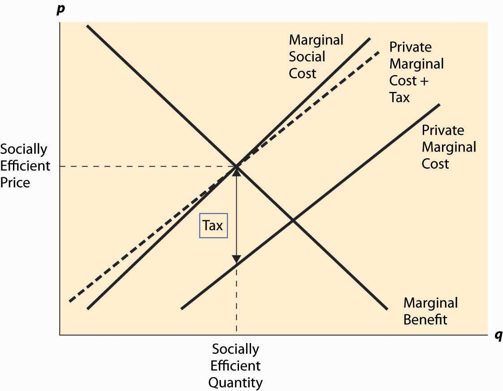

Arthur Cecil Pigou (1877–1959) proposed a solution to the problem of externalities that has become a standard approach. This simple idea is to impose a per-unit tax on a good, thereby generating negative externalities equal to the marginal externality at the socially efficient quantity. This is known as a Pigouvian taxA per-unit tax on a good.. Thus, if at the socially efficient quantity, the marginal external cost is $1, then a $1 per-unit tax would lead to the right outcome. This is illustrated in Figure 7.3 "The Pigouvian tax".
The tax that is added is the difference, at the socially efficient quantity, between the marginal social cost and the marginal private cost, which equals the marginal external cost. The tax level need not equal the marginal external cost at other quantities, and the figure reflects a marginal external cost that is growing as the quantity grows. Nevertheless, the new supply curve created by the addition of the tax intersects demand (the marginal benefit) at the socially efficient quantity. As a result, the new competitive equilibrium, taking account of the tax, is efficient.
The case of a positive externality is similar. Here, a subsidy is needed to induce the efficient quantity. It is left as an exercise.
Figure 7.3 The Pigouvian tax
Taxes and subsidies are fairly common instruments to control externalities. We subsidize higher education with state universities, and the federal government provides funds for research and limited funds for the arts. Taxes on cigarettes and alcoholic beverages are used to discourage these activities, perhaps because smoking and drinking alcoholic beverages create negative externalities. (Cigarettes and alcohol also have inelastic demands, which make them good candidates for taxation since there is only a small distortion of the quantity.) However, while important in some arenas, taxes and subsidies are not the most common approach to regulation of externalities.